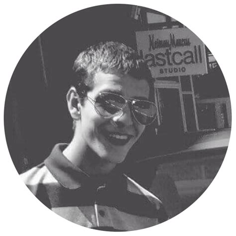

Dmitriy
A little bit about myself:
My name is Dmitriy, I am 22 years old, and I live in Massachusetts, USA.
Some of my hobbies are playing musical instruments such as the piano, accordion and saxophone, sketching/drawing, cooking, and going outside for a walk.
My interests consist of what I want to do as my career and what I want to study, including Web and Software Development, also investing in the Stock Market, and doing research on Computer and Internet Security.
This is me, this is my website. Welcome!
For a resume, email me for more information. Please fill out this form: Email Form
Developed and designed by Dmitriy.